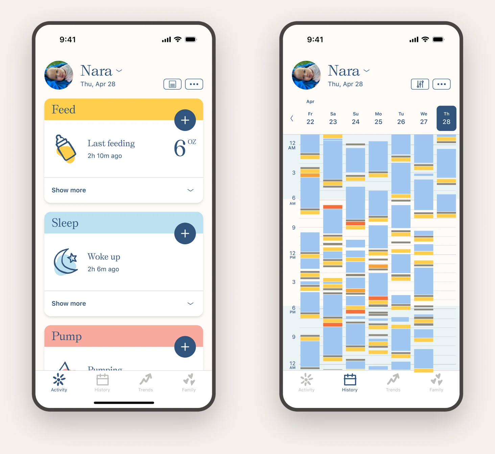
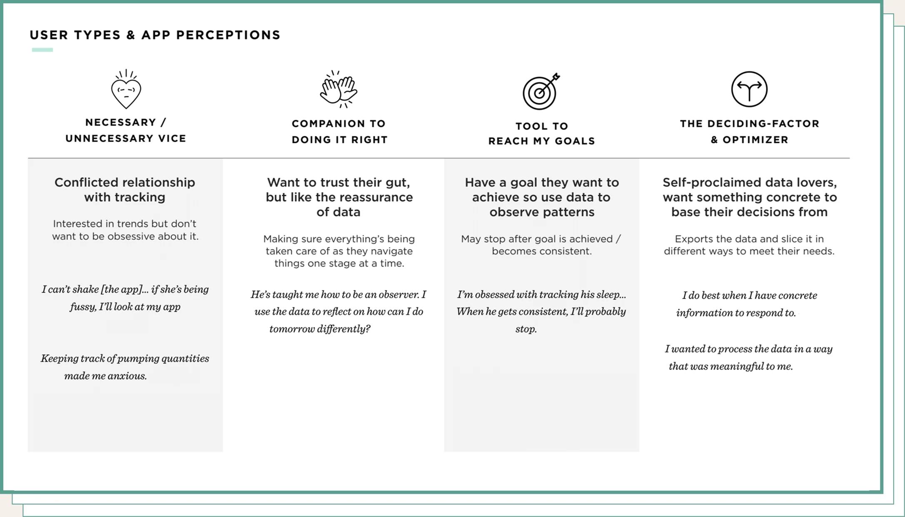
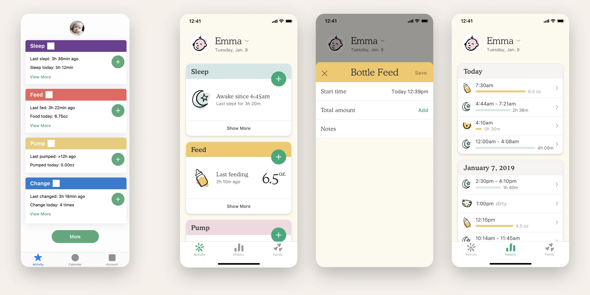
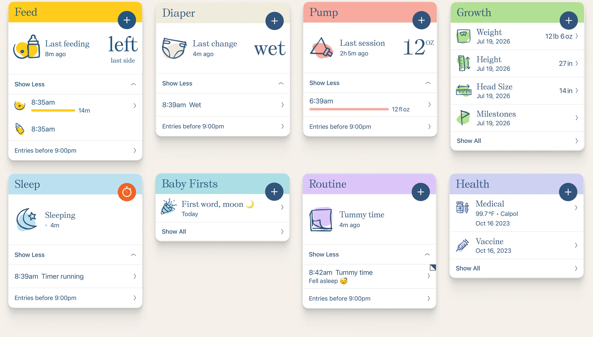
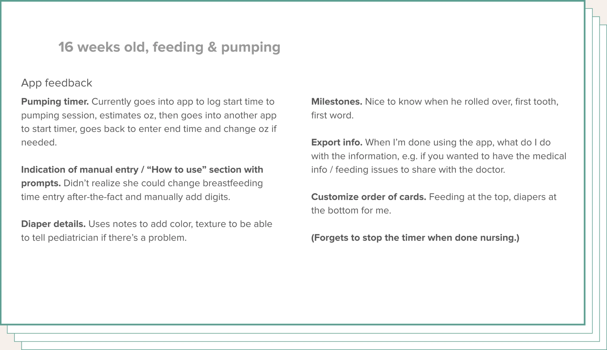
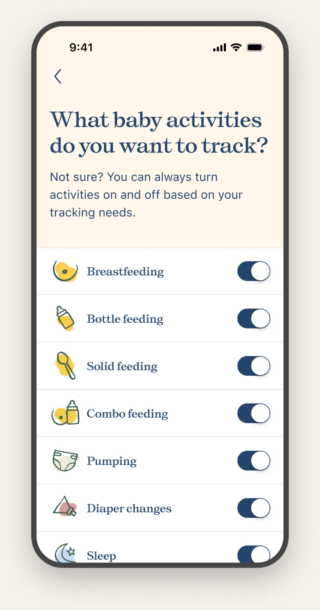
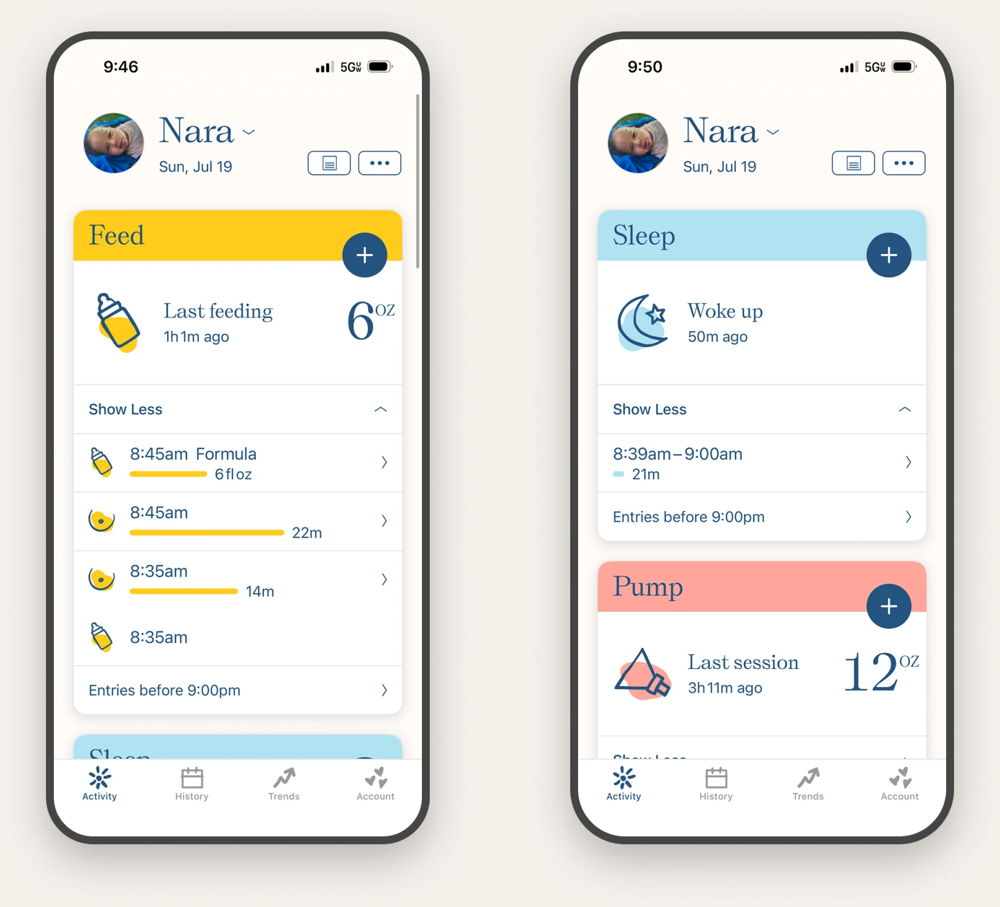
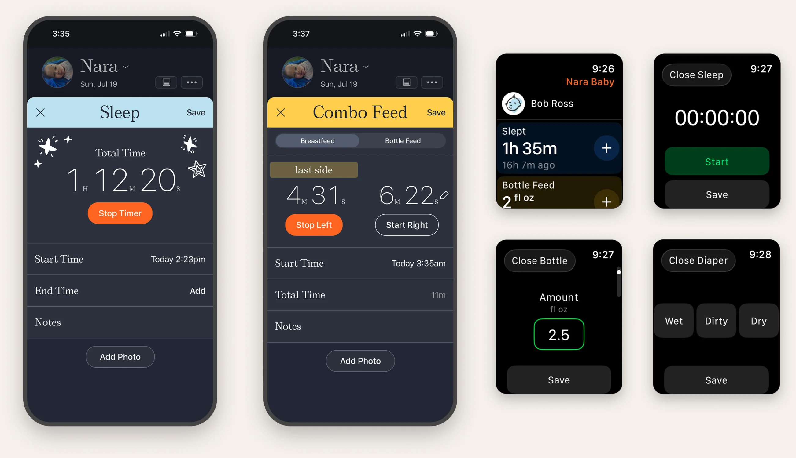
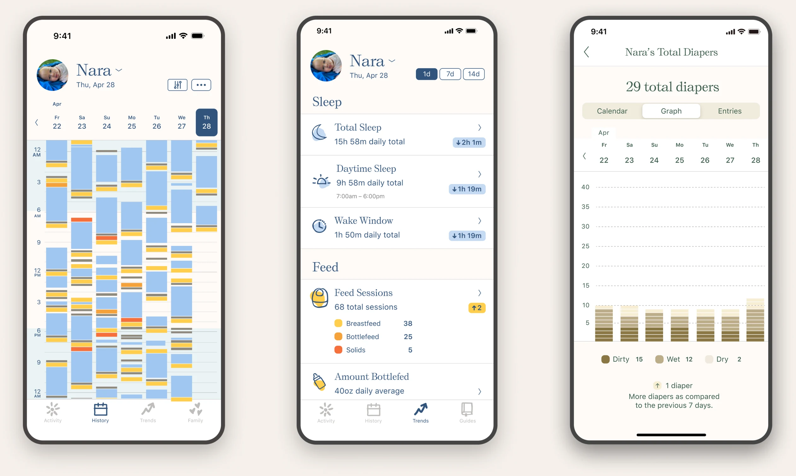
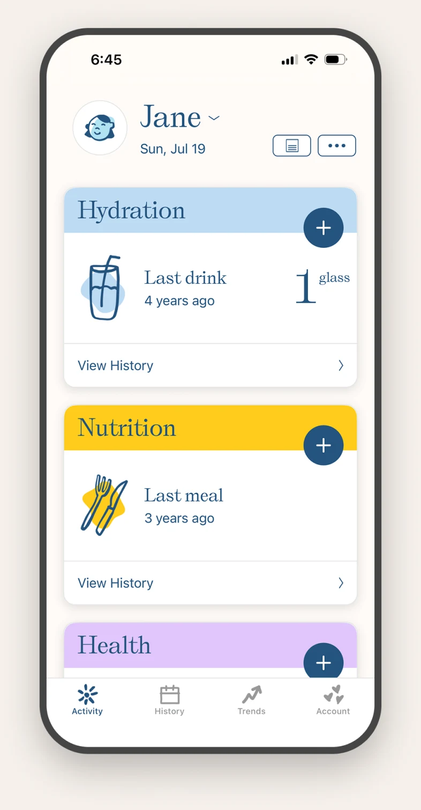

Over an eight year engagement I led UX & product design for Nara, a baby tracking app. I worked directly with the product and engineering team. Every design decision started the same way: user interviews, survey mining, App Store reviews, and inbound email. The product began as a baby tracker and took on postpartum, then pregnancy, without changing shape.
- over 1 million+ Caregivers & parents
- 3 platforms iOS, Android & watchOS
- 4.9 App store rating
- 23,000+ Parent reviews










Eight years, three platforms, three products, one design system. Every change came out of the same research cycle: interviews, surveys, App Store reviews, support email. Every design change traced back to something a parent needed.
- over 1 million+ caregivers & parents
- 3 platforms iOS, Android & watchOS
- 4.9 app store rating
- 23,000+ parent reviews